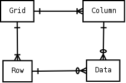
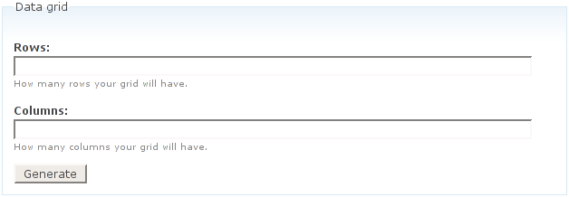
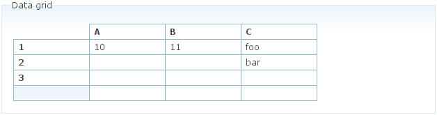
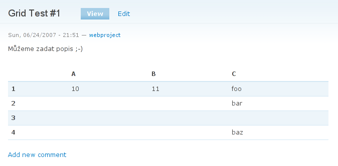

Tabulky v Drupalu, administrace, 2. část
Tento článek navazuje na úvodní první část, kde jsme si řekli, že jednou se nám může hodit něco, co bude schopné administrovat data v tabulkách, například ceníky. Místo toho, abychom v node použili klasické tables, td, tr; a data pracně zapisovali a potom aktualizovali v kódu, tak si v Drupalu můžeme vytvořit admin na tyto tabulky. V podstatě řešení je již tady – vytvořili jsme jednoduchý modul, který to zvládne.
Pro náš účel jsme zvažovali i použití již hotových modulů (přecejen by nám to mohlo usnadnit práci). Objevili jsme dvě alternativy: Tables Filter Module a Table Manager. První jmenovaný se hodí na jednoduché a hlavně menší tabulky. Práce s ním je ale rychlá a jednoduchá, nepotřebuje ani vlastní datové struktury. Table Manager je naopak celkem nabitý různými možnostmi, ale i u něj jsme našli řadu nevýhod (tabulky se sice dají vložit kamkoli pomocí filtru, ale nejsou to uzly, také plnění větších tabulek po jednom řádku časem omrzí).
Protože žádný z hotových modulů úplně nesplňuje naše požadavky, pustíme se do tvorby vlastního modulu, jak jsme ostatně slibovali v prní části.
Návrh modulu
Vytvoříme nový typ uzlu – Data grid. To znamená, že každá tabulka bude samostatným uzlem. Bude obsahovat název, libovolně dlouhý textový popis a samostatnou tabulku. Při vytváření uzlu budou zadány rozměry tabulky (počet řádků a sloupců). Rozměry v této verzi nebude možné dále měnit. S tabulkami tak budeme moci dělat všechno, co s kterýmkoli jiným uzlem.
Všechny soubory modulu budou uloženy v adresáři modules/grid. (budeme potřebovat soubory grid.module, grid.install, grid.info a pak soubory pro JavaScript a kaskádové styly).
Datový model
Data všech tabulek budou uložena v jedné databázové tabulce. Další dvě tabulky budou sloužit pro uložení nadpisů a pořadí sloupců a řádků tabulky. Pro každé pole tabulky bude v příslušné tabulce jeden řádek. To je výhodné pro řídké tabulky, protože prázdná pole nebudeme ukládat.
Databázové schéma zjednodušeně ilustruje obrázek.

Kód pro vytvoření tabulek umístíme do souboru grid.install. (V přiloženém archivu chybí kód pro vytvoření tabulek v případě instalace na PostgreSQL databázi. To ponecháme na laskavém čtenáři :-)
Vytváření tabulek – administrace
Při vytváření tabulky nejprve potřebujeme získat požadované rozměry tabulky. Na jejich základě potom vygenerujeme formulář pro naplnění tabulky daty (a zadání názvů sloupců a řádků). Pro odeslání rozměrů na server a poté vložení formuláře do stránky použijeme AJAX. Takže budeme potřebovat napsat kousek JavaScriptu (soubor grid.js) a php handler, který vytvoří html kód formuláře na základě zaslaných rozměrů.

Pro pěkný a přehledný vzhled tabulky (viz obrázek) nadefinujeme orámování tabulky a „buněk“ (obyčejných formulářových textových polí) – všechno v souboru grid.css. Trik je ve zrušení rámečku textových polí a naopak nastavení 1px širokého rámečku buňkám tabulky.

Dále naprogramujeme mazání, ukládání nové a úpravy existující tabulky. V posledním případě budeme trochu líní – místo uložení změn stávající tabulku smažeme a vytvoříme novou. Můžeme si to dovolit, protože nepotřebujeme zachovat ID řádků a sloupců, to ale nemusí být vždy pravda (například pokud budeme návštěvníkům chtít umožnit provádět s našimi tabulkami nějaká kouzla v podobě změny pořadí sloupců, skrývání sloupců a podobně).
Nakonec zbývá naprogramovat načtení tabulky z databáze a její zobrazení návštěvníkům webu. Při zobrazení přitom využijeme funkce theme, čímž zajistíme, že tabulka bude zapadat do designu webu a její vzhled budeme mít pod kontrolou pomocí témat.
Všechen php kód realizující uvedené operace najdete v souborugrid.module.
Hotovo
Kompletní zdrojový kód modulu je k dispozici v přiloženém archivu.
Vzhledem k tomu, že každá tabulka je node, můžeme s ní zacházet jako s jakýmkoli jiným typem obsahu. Tabulky můžeme řadit do kategorií, zobrazovat v seznamech, diskutovat pod nimi nebo je vložit na jinou stránku pomocí modulu Views nebo Node As Block.

Jakékoli dotazy rádi zodpovíme v diskusi pod článkem. Příště můžeme modul nějak vylepšit, například o možnost mazání nebo přidání řádku či sloupce nebo třeba možnost vkládat do tabulky jednoduché matematické vzorce.
Zde můžete stáhnout modul Data Grid.

themeable?
kdyz uz nazvete funkci themeable, mela by byt moznost tuhle funkci prepsat pomoci theme aby mel uzivatel celkovou moznost nad tim, jak jeho tabulka bude vypadat nejen pomoci css.
a taky doporucim kdyz uz pisete moduly pro drupal → http://drupal.org/…ng-standards
Díky za upozornění,
Díky za upozornění, dle našeho názoru jde jen o to, jestli uděláte něco tak anebo onak a výsledek je stejný. 10 programátorů, 10 postupů. Jestli se Vám chce, napište sem, co konkrétně je tam špatně, opravíme to.
no, nejde o to jestli je
no, nejde o to jestli je to spatne nebo ne, ja jenom rikam, ze jsem hledal proc je ta funkce „themeable“ kdyz vlastne vubec themeable neni :) tim ze udelate funkci „themeable“ umoznite uzivatelum zmenit vystup vasi tabulky, bez toho aby museli zasahovat do modulu, pomoci pridani funkci do template.php jejich templejtu.
a pokud je reakce ‚jestli uděláte něco tak anebo onak a výsledek je stejný‘ na ten odkaz o coding standards, tak bych vazne doporucil se toho drzet, precejenom delate pod jednim ‚frameworkem‘ s ostatnima ne 10ti ale 1000+ programatory, a pokud by jste to pak chteli vydat jako regulerni modul, byli by jste jiste upozorneni na tyto nedostatky. Jde hlavne o to aby se v tom ostatni vyznali, vcetne i psani dokumentace a tak…
je mi jasny ze tohle je priklad, ale i tak, ostatni se z toho muzou rovnou dozvedet jak spravne psat moduly pro Drupal ;)
Will you plan to add Data
Will you plan to add Data Grid module as a project on drupal.org? I could not find it there and I'm pretty sure yhere will be much interest in such module in community.
I dont know yet,
maybe. It is our first module for publishing it to all people. Im curious what (if) people will write here as their experience with this module.
And, as I found out, there is maybe one „problem“ – the user „sing“ wrote it above your comment. It is in czech, I will translate it to EN shortly: We used a function name themeable which user „sign“ does not like, he saiz that it is not good. Also, by user sign we dont follow Drupal standards, so probably it would not be acceptable for Drupal comunity at drupal.org.
Maybe user sign could write here his opinion in english too, I see that some people speaking english visit this website.
Today I talked with our programmer, he does not think it is important do some changes in a module. We will change some small things today, I will write here later about this change.
To everybody: write here your opinion about the module – I mean if it works well, if you had not some problems with this module.
Všem: Vyzkoušejte ten modul a napište sem do diskuze, jestli to funguje, jestli jste neměli s něčím problém.
well, I haven't said that
well, I haven't said that it won't be accepted by drupal community. It is just a standard procedure of writing modules, following standards, so probably it will be one of the issues in bug tracker to optimize the code. :)
Roman: I think, by sharing
Roman: I think, by sharing module to the community, you can only gain profit. if you share, you can count on users which provide patches to your module to make it better.
As mentioned coding standards – its only recomendation and there are couple of modules which don't follow those standards and are in community.
Function grid_prepare_themeable() indeed need rewriting to follow theme api recomendation but in my opinion it's a minnor issue. instead of grid_prepare_themeable() you should provide ie. theme_grid_data() funcion which can be easly overrided in template.php file. Than in nodeapi hook there should be call for ie:There are no problem for me to read czech, but i'm not feel i can write properly, so you don't have to bother replying in english.
Dobře, jdeme prolomit
obranný štít drupalu.org a snad se nám tam podaří modul umístit. Dám sem potom zprávu, až to tam bude.
Maly update
Tak jen jsme tabulator nahradili dvěma mezerami (v kódu). Protože různí lidé mají různě nastavené editory, a pak když se míchají taby s mezerami, tak se jim kód může zobrazit nepřehledný (například používám-li tab široký dvě mezery, u mě to tedy vypadá ok, ale když bude mít někdo tab nastavený na 4 mezery, uvidí kód rozházený).
We only changed TAB for 2 spaces in a source code.